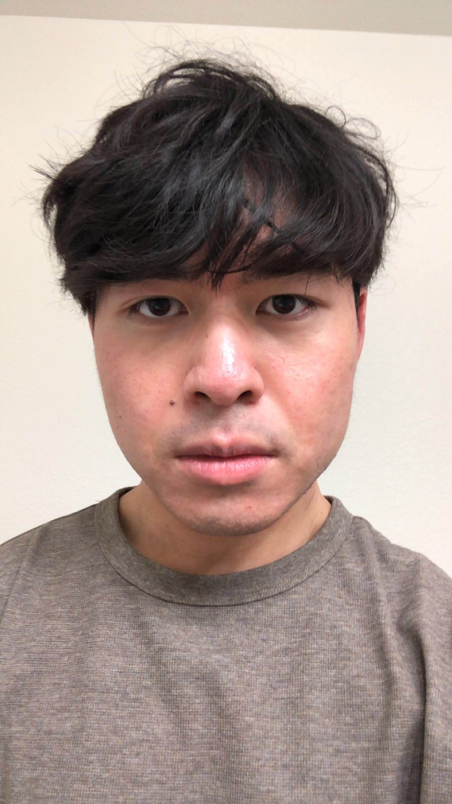

About Me

Hi! My name is Kevin, and I'm a 4th year student majoring in Computer Science at the University of Colorado Boulder. I am also working on a Media Production minor. I'm excited to learn more about using HTML, CSS, and JavaScript to build accessible websites for people. I was born and raised in Colorado. My family consists of my brother, sister, mom and dad. I am 21 years old right now, and I was born on June 13, 2003. Things I do in my free time are playing games, running and going to the gym. I also love watching basketball and my current favorite team is the Atlanta Hawks.